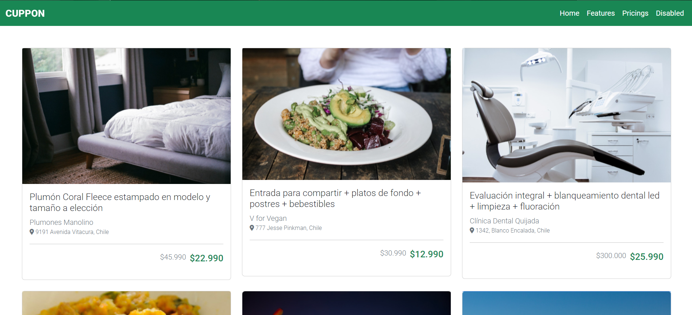
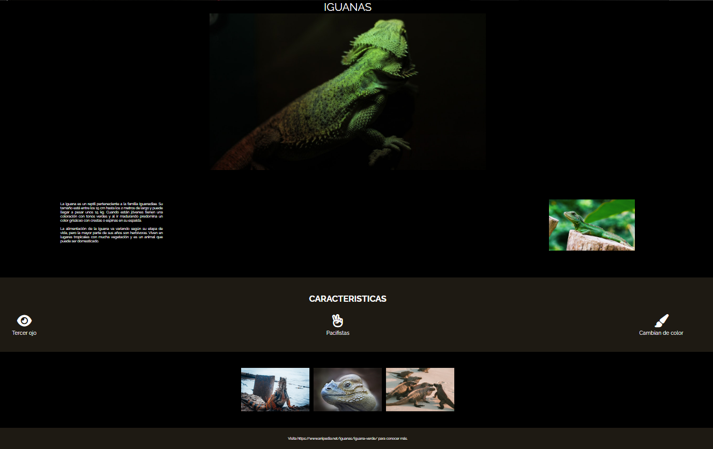

Acerca Mi
Apasionado por el desarrollo integral de las personas a través de la educación emocional y la aplicación de la neurociencia en el proceso de aprendizaje. Me especializo en crear ambientes inclusivos e innovadores donde cada individuo pueda alcanzar su máximo potencial.
Educación
- Master en Educación Emocional y Neurociencia Aplicada
- Licenciado en Educación con Pedagogía en Educación Física, mención en Inclusión e Innovación Social
- Bootcamp Desafio Latam
Experiencia
- Manejo de HTMl basico
- Utilización de Css nivel basico
- Trabajo con Boostrap 5
- Utilización y manejo de Terminal/git
Portafolio
Pagina Web de Iguanas
WebSitePagina Web de GreenHouse
WebSitePagina Web de Cuppon
WebSite

